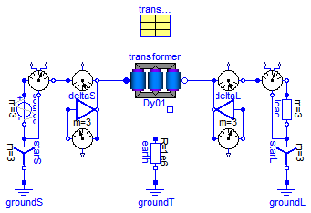
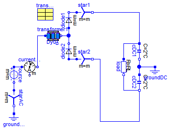
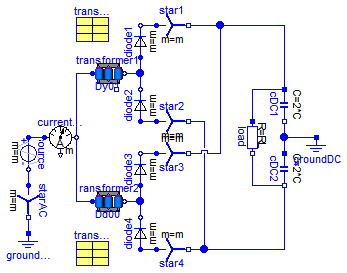

Extends from Modelica.Icons.ExamplesPackage (Icon for packages containing runnable examples).
| Name | Description |
|---|---|
| Transformer Testbench | |
| AsymmetricalLoad | |
| 6-pulse rectifier with 1 transformer | |
| 12-pulse rectifier with 2 transformers | |
| Test example: AsynchronousInductionMachineSquirrelCage transformer starting |
 Modelica.Electrical.Machines.Examples.Transformers.TransformerTestbench
Modelica.Electrical.Machines.Examples.Transformers.TransformerTestbench
You may choose different connections as well as vary the load (even not symmetrical).
Please pay attention to proper grounding of the primary and secondary part of the whole circuit.
The primary and secondary starpoint are available as connectors, if the connection is not delta (D or d).
In some cases it may be necessary to ground the transformer's starpoint even though the source's or load's starpoint are grounded:
Extends from Modelica.Icons.Example (Icon for runnable examples).
| Type | Name | Default | Description |
|---|---|---|---|
| Resistance | RL[3] | fill(1/3, 3) | Load resistance [Ohm] |
model TransformerTestbench "Transformer Testbench" extends Modelica.Icons.Example; parameter Modelica.SIunits.Resistance RL[3]=fill(1/3,3) "Load resistance";Modelica.Electrical.MultiPhase.Sources.SineVoltage source(freqHz=fill(50, 3), V=fill(sqrt(2/3)*100, 3)); Modelica.Electrical.MultiPhase.Basic.Star starS; Modelica.Electrical.Analog.Basic.Ground groundS; Machines.Sensors.ElectricalPowerSensor electricalPowerSensorS; Machines.Sensors.CurrentQuasiRMSSensor currentQuasiRMSSensorS; Machines.Sensors.VoltageQuasiRMSSensor voltageQuasiRMSSensorS; Modelica.Electrical.MultiPhase.Basic.Delta deltaS; Modelica.Electrical.Analog.Basic.Resistor earth(R=1e6); Modelica.Electrical.Analog.Basic.Ground groundT; Machines.Sensors.VoltageQuasiRMSSensor voltageRMSSensorL; Modelica.Electrical.MultiPhase.Basic.Delta deltaL; Machines.Sensors.CurrentQuasiRMSSensor currentQuasiRMSSensorL; Machines.Sensors.ElectricalPowerSensor electricalPowerSensorL; Modelica.Electrical.MultiPhase.Basic.Resistor load(R=RL); Modelica.Electrical.MultiPhase.Basic.Star starL; Modelica.Electrical.Analog.Basic.Ground groundL; Machines.Utilities.TransformerData transformerData( C1=Modelica.Utilities.Strings.substring(transformer.VectorGroup,1,1), C2=Modelica.Utilities.Strings.substring(transformer.VectorGroup,2,2)); BasicMachines.Transformers.Dy.Dy01 transformer( n=transformerData.n, R1=transformerData.R1, L1sigma=transformerData.L1sigma, R2=transformerData.R2, L2sigma=transformerData.L2sigma); equationconnect(starS.pin_n, groundS.p); connect(source.plug_n, starS.plug_p); connect(starL.pin_n, groundL.p); connect(load.plug_n, starL.plug_p); connect(earth.n, groundT.p); connect(electricalPowerSensorS.plug_nv, starS.plug_p); connect(source.plug_p, electricalPowerSensorS.plug_p); connect(electricalPowerSensorS.plug_ni, currentQuasiRMSSensorS.plug_p); connect(currentQuasiRMSSensorL.plug_n, electricalPowerSensorL.plug_p); connect(electricalPowerSensorL.plug_ni, load.plug_p); connect(electricalPowerSensorL.plug_nv, starL.plug_p); connect(currentQuasiRMSSensorS.plug_n, transformer.plug1); connect(transformer.plug2, currentQuasiRMSSensorL.plug_p); connect(deltaS.plug_p, voltageQuasiRMSSensorS.plug_n); connect(deltaS.plug_n, voltageQuasiRMSSensorS.plug_p); connect(currentQuasiRMSSensorS.plug_n, deltaS.plug_n); connect(currentQuasiRMSSensorL.plug_p, deltaL.plug_n); connect(deltaL.plug_n, voltageRMSSensorL.plug_p); connect(deltaL.plug_p, voltageRMSSensorL.plug_n); end TransformerTestbench;
Modelica.Electrical.Machines.Examples.Transformers.AsymmetricalLoad

You may choose different connections.
Please pay attention to proper grounding of the primary and secondary part of the whole circuit.
The primary and secondary starpoint are available as connectors, if the connection is not delta (D or d).
In some cases it may be necessary to ground the transformer's starpoint even though the source's or load's starpoint are grounded:
Extends from Modelica.Icons.Example (Icon for runnable examples).
| Type | Name | Default | Description |
|---|---|---|---|
| Resistance | RL | 1 | Load resistance [Ohm] |
model AsymmetricalLoad "AsymmetricalLoad" extends Modelica.Icons.Example; parameter Modelica.SIunits.Resistance RL=1 "Load resistance";Modelica.Electrical.MultiPhase.Sources.SineVoltage source(freqHz=fill(50, 3), V=fill(sqrt(2/3)*100, 3)); Modelica.Electrical.MultiPhase.Basic.Star starS; Modelica.Electrical.Analog.Basic.Ground groundS; MultiPhase.Sensors.CurrentSensor currentSensorS; Modelica.Electrical.Analog.Basic.Ground groundL; Machines.Utilities.TransformerData transformerData( C1=Modelica.Utilities.Strings.substring(transformer.VectorGroup,1,1), C2=Modelica.Utilities.Strings.substring(transformer.VectorGroup,2,2)); BasicMachines.Transformers.Dy.Dy01 transformer( n=transformerData.n, R1=transformerData.R1, L1sigma=transformerData.L1sigma, R2=transformerData.R2, L2sigma=transformerData.L2sigma); MultiPhase.Basic.PlugToPin_n plugToPin_n( k=1); Analog.Basic.Resistor load(R=RL); Analog.Basic.Resistor earth(R=1e6); Analog.Basic.Ground groundT; equationconnect(starS.pin_n, groundS.p); connect(source.plug_n, starS.plug_p); connect(currentSensorS.plug_n, transformer.plug1); connect(transformer.plug2, plugToPin_n.plug_n); connect(transformer.starpoint2, groundL.p); connect(load.p, plugToPin_n.pin_n); connect(transformer.starpoint2, load.n); connect(source.plug_p, currentSensorS.plug_p); connect(earth.n,groundT. p); end AsymmetricalLoad;
Modelica.Electrical.Machines.Examples.Transformers.Rectifier6pulse
Extends from Modelica.Icons.Example (Icon for runnable examples).
| Type | Name | Default | Description |
|---|---|---|---|
| Voltage | V | 100*sqrt(2/3) | Amplitude of star-voltage [V] |
| Frequency | f | 50 | Frequency [Hz] |
| Resistance | RL | 0.4 | Load resistance [Ohm] |
| Capacitance | C | 0.005 | Total DC-capacitance [F] |
| Voltage | VC0 | sqrt(3)*V | Initial voltage of capacitance [V] |
model Rectifier6pulse "6-pulse rectifier with 1 transformer"
extends Modelica.Icons.Example;
constant Integer m=3 "Number of phases";
parameter Modelica.SIunits.Voltage V=100*sqrt(2/3)
"Amplitude of star-voltage";
parameter Modelica.SIunits.Frequency f=50 "Frequency";
parameter Modelica.SIunits.Resistance RL=0.4 "Load resistance";
parameter Modelica.SIunits.Capacitance C=0.005 "Total DC-capacitance";
parameter Modelica.SIunits.Voltage VC0=sqrt(3)*V
"Initial voltage of capacitance";
Modelica.Electrical.MultiPhase.Sources.SineVoltage source(
m=m,
V=fill(V, m),
freqHz=fill(f, m));
Modelica.Electrical.MultiPhase.Basic.Star starAC(m=m);
Modelica.Electrical.Analog.Basic.Ground groundAC;
Modelica.Electrical.MultiPhase.Sensors.CurrentSensor currentSensor(m=m);
Modelica.Electrical.MultiPhase.Ideal.IdealDiode diode1(m=m);
Modelica.Electrical.MultiPhase.Basic.Star star1(m=m);
Modelica.Electrical.MultiPhase.Ideal.IdealDiode diode2(m=m);
Modelica.Electrical.MultiPhase.Basic.Star star2(m=m);
Modelica.Electrical.Analog.Basic.Resistor load(R=RL);
Modelica.Electrical.Analog.Basic.Capacitor cDC1(C=2*C, v(start=VC0/2));
Modelica.Electrical.Analog.Basic.Capacitor cDC2(C=2*C, v(start=VC0/2));
Modelica.Electrical.Analog.Basic.Ground groundDC;
Machines.Utilities.TransformerData transformerData1(
C1=Modelica.Utilities.Strings.substring(transformer1.VectorGroup,1,1),
C2=Modelica.Utilities.Strings.substring(transformer1.VectorGroup,2,2));
Machines.BasicMachines.Transformers.Dy.Dy01 transformer1(
n=transformerData1.n,
R1=transformerData1.R1,
L1sigma=transformerData1.L1sigma,
R2=transformerData1.R2,
L2sigma=transformerData1.L2sigma);
equation
connect(cDC1.n, cDC2.p);
connect(cDC1.n, groundDC.p);
connect(starAC.plug_p, source.plug_n);
connect(diode1.plug_n, star1.plug_p);
connect(diode2.plug_p, star2.plug_p);
connect(diode2.plug_n, diode1.plug_p);
connect(starAC.pin_n, groundAC.p);
connect(source.plug_p, currentSensor.plug_p);
connect(load.p, cDC1.p);
connect(load.n, cDC2.n);
connect(star1.pin_n, cDC1.p);
connect(star2.pin_n, cDC2.n);
connect(transformer1.plug1, currentSensor.plug_n);
connect(transformer1.plug2, diode1.plug_p);
end Rectifier6pulse;
Modelica.Electrical.Machines.Examples.Transformers.Rectifier12pulse
Extends from Machines.Examples.Transformers.Rectifier6pulse (6-pulse rectifier with 1 transformer).
| Type | Name | Default | Description |
|---|---|---|---|
| Voltage | V | 100*sqrt(2/3) | Amplitude of star-voltage [V] |
| Frequency | f | 50 | Frequency [Hz] |
| Resistance | RL | 0.2 | Load resistance [Ohm] |
| Capacitance | C | 0.005 | Total DC-capacitance [F] |
| Voltage | VC0 | sqrt(3)*V | Initial voltage of capacitance [V] |
model Rectifier12pulse "12-pulse rectifier with 2 transformers" extends Machines.Examples.Transformers.Rectifier6pulse(RL=0.2);Modelica.Electrical.MultiPhase.Ideal.IdealDiode diode3(m=m); Modelica.Electrical.MultiPhase.Basic.Star star3(m=m); Modelica.Electrical.MultiPhase.Ideal.IdealDiode diode4(m=m); Modelica.Electrical.MultiPhase.Basic.Star star4(m=m); Machines.BasicMachines.Transformers.Dd.Dd00 transformer2( n=transformerData2.n, R1=transformerData2.R1, L1sigma=transformerData2.L1sigma, R2=transformerData2.R2, L2sigma=transformerData2.L2sigma); Machines.Utilities.TransformerData transformerData2( C1=Modelica.Utilities.Strings.substring(transformer2.VectorGroup,1,1), C2=Modelica.Utilities.Strings.substring(transformer2.VectorGroup,2,2)); equationconnect(diode3.plug_n, star3.plug_p); connect(diode4.plug_p, star4.plug_p); connect(diode4.plug_n, diode3.plug_p); connect(star4.pin_n, cDC2.n); connect(star3.pin_n, cDC1.p); connect(transformer2.plug2, diode4.plug_n); connect(transformer2.plug1, currentSensor.plug_n); end Rectifier12pulse;
Modelica.Electrical.Machines.Examples.Transformers.AIMC_Transformer

Extends from Machines.Examples.AsynchronousInductionMachines.AIMC_Transformer (Test example: AsynchronousInductionMachineSquirrelCage transformer starting).
| Type | Name | Default | Description |
|---|---|---|---|
| Voltage | VNominal | 100 | Nominal RMS voltage per phase [V] |
| Frequency | fNominal | 50 | Nominal frequency [Hz] |
| Time | tStart1 | 0.1 | Start time [s] |
| Time | tStart2 | 2.0 | Start time of bypass transformer [s] |
| Torque | TLoad | 161.4 | Nominal load torque [N.m] |
| AngularVelocity | wLoad | 1440.45*2*Modelica.Constants... | Nominal load speed [rad/s] |
| Inertia | JLoad | 0.29 | Load's moment of inertia [kg.m2] |
model AIMC_Transformer "Test example: AsynchronousInductionMachineSquirrelCage transformer starting" extends Machines.Examples.AsynchronousInductionMachines.AIMC_Transformer;end AIMC_Transformer;